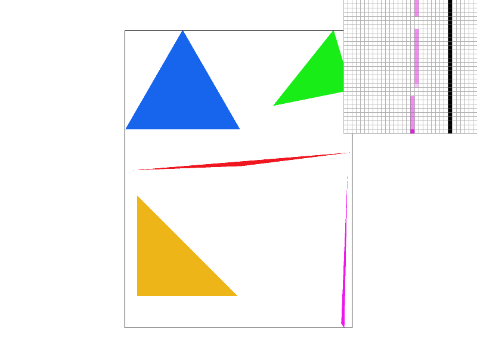
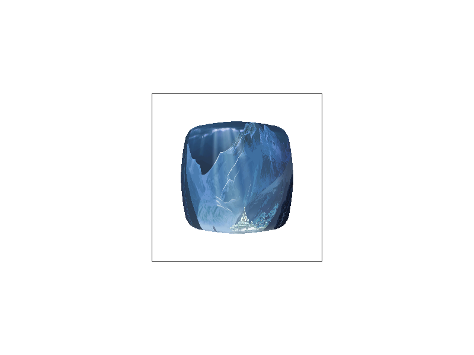
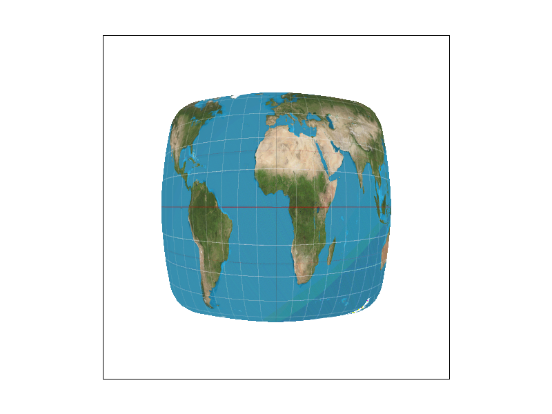

Overview:
In this project, I've implemented features in a rasterizer for scalable vector graphics (SVGs). As a quick walkthrough of the rasterization process, the rasterizer first parses input data regarding points, lines, and triangles from the provided SVG. Through a series of triangle in-tests, the rasterizer is able to determine exactly which pixels should be colored on the screen (and what color they should be) in order to accurately reflect the input data. Numerous other features have been implemented as well, including antialiasing to improve the visual quality of the rendered images by smoothing jagged lines, barycentric coordinate interpolation for color blending and rapid triangle in-testing, and various level sampling and pixel sampling methods to support texture mapping. A detailed walkthrough of each part will be provided below.
Section I: Rasterization
Part 1: Rasterizing single-color triangles
How are Triangles Rasterized?
At its core, triangle rasterization revolves around determining how to draw a triangle in abstract 3D space onto a screen of pixels (called screen space).
While it isn't a perfect analogy, a screen can be thought of as a rectangular collection of a bunch of tiny squares called pixels. Triangle rasterization then reduces to
determining what pixels need to be colored in to accurately draw the triangle on the screen. In other words, we need to determine what pixels
fall within each triangle, since these are the pixels we want to color in on the screen. Given that we know the location of the triangle on the screen,
how do we determine whether some pixel p is within the triangle we are trying to rasterize? We can perform a simple triangle in-test!
For each edge of the triangle, let's extend the line casted by the edge, and starting at an arbitrary vertex, we can choose a winding order. Given the winding order, at each vertex, we can draw a vector perpendicular to the edge-line defined by the current vertex and the next vertex in the winding order. Starting again from the first vertex in the winding order, at each vertex, draw a vector stemming from the current vertex that passes through p. Now simply take the dot product of this vector and the perpendicular vector previously defined at this vertex, and repeat for each of the vertices in the order specified by the winding order. Provided the signs of the dot products are all the same, the point is in the triangle! Otherwise, the point lies outside the triangle.
Given a specific color, any pixel that is found to be in the triangle is marked with the specified color. Other pixels are left white. This process is then repeated for every pixel in the bounding box of the triangle, defined as the smallest rectangle that fully encloses the triangle.
Algorithmic Performance:
My naive algorithm is no worse than one which checks each sample in the bounding box of the triangle, because that is precisely what it does. It calculates
the minimum x and minimum y coordinates, xMin and yMin, of the triangle it is rasterizing, as well as the maximum coordinates in both dimensions
xMax and yMax, and checks only the pixels within the box bounded by these coordinates. There are plenty of optimizations for this algorithm however, which are described
below.
Optimizing Rasterization:
Rasterization can be optimized by leveraging barycentric coordinates. Calculating the barycentric coordinates of the point of interest, and ensuring that all barycentric
coordinates are positive is an effective way of determining whether a point is within a triangle. Using barycentric coordinates winds up being faster as we are able to
bypass the extra winding order check that using half plane testing requires. The extra primitive arithmetic is negligible in the face of extra logic checks. As a benchmark,
test4 is rasterized both with and without optimizations. The differences are minute, but consistently in favor of barycentric coordinate testing.
All renders and benchmarks were performed on a Ryzen 7 3700x, with an NVIDIA GeForce RTX 2080 Super.
| Triangle | Rasterization Time BASE (ns) | Rasterization Time OPTIMIZED(ns) |
| 1 | 1812200 | 1722500 |
| 2 | 895100 | 857400 |
| 3 | 456100 | 400500 |
| 4 | 1616500 | 1586800 |
| 5 | 128800 | 130200 |
Part 2: Antialiasing triangles
Antialiasing through supersampling:
Conceptually, supersampling mimics the effect of sequentially applying a box filter to the frequency domain of an image. The algorithm requires only a simple modification
of the simple triangle rasterization algorithm. Just like before, we will only consider pixels within the triangles bounding box to speed up computation. Given a perfect-square
supersampling rate, we know we will need to take sample_rate samples per pixel, instead of just one. For simplicity's sake, we can assume the supersamples will form
a perfect grid within the pixel, meaning we will essentially have sqrt(sample_rate) rows of samples, and sqrt(sample_rate) columns of samples. For each supersample
we perform the same triangle in-test as described above. We then store the color data for every supersample for every pixel in a vector of supersamples. This means in all, our supersamples
vector will have length * width * sample_rate color values, where the length and width variables refer simply to the resolution dimensions of the image.
This seems nice, but unfortunately, we are left with a problem. The resolution at which we just sampled is much too high! Our screen has limited resolution, so we can't arbitrarily increase the size of our frame buffer. Thus we now must downsample. For each genuine pixel in the framebuffer, where a genuine pixel is one which actually exists on the screen, we average the color of all of its supersamples by pulling the supersampled colors from the supersamples vector defined earlier. Each pixel's red, green and blue values are written sequentially in the frame buffer, an unsigned character array, then the pixels are rendered from the frame buffer onto the screen. The result? A much smoother image, without the jagged lines (jaggies) we saw before.

|

|
|
|

|
Take a look at this comparison of the same image supersampled with sample rates 1 (no supersampling), 4, 9, and 16. Notice how the edge blurs together, removing the harsh triangle disconnect observed with sample rate 1? When we don't super sample, if the triangle is very thin, and we sample the pixel in a place that just so happens to be outside the thin part of our triangle, our algorithm treats it as if there was nothing there! As we take more supersamples, our chances of not hitting any of the triangle decreases. Intuitively, when we average the colors of all of our supersamples, we are calculating the intensity of the color displayed as a function of the coverage of the pixel by the triangle. Since the pixel is partially covered by the triangle, we see that the color is partially saturated to indicate at least part of the triangle is covering the pixel, which eliminates the stark all or nothing coloring scheme with only one sample per pixel. In general, all edges will appear smoother as we up the sample rate.
Alternate Scheme: Jittered Sampling:
To defeat the regularity of supersampling which can often times lead to predictable rendering artifacts, I also implemented jittered sampling for antialiasing. It actually builds upon
regular supersampling quite well. The only difference is that instead of taking each supersample at a perfect equivalent interval, such that all supersamples are evenly
spaced, instead, jittered sampling first cuts the pixel into n rows and n columns, where n is simply the square root of the sample rate. Then in each of these new sub-cuts of the pixel, we randomly
determine the position of the sample. Notice how while grid supersampling leaves a disconnected pixel at the top, even at 16 supersamples per pixel, jittered supersampling does not.
(Random position seed: 22)
Section II: Sampling
Part 3: Barycentric coordinates
What are Barycentric Coordinates?
Barycentric coordinates are a little weird to understand. The best analogy and explanation I have heard, which really makes sense to me, is that barycentric coordinates
in a triangle refer to the weight each triangle vertex has on the point in question. In other words, the point in question was created by combining weighted versions of all 3 vertices
of the triangle, and these weights themselves are the barycentric coordinates. The weights are like a measure of the pull each vertex has on the point in question.
This also helps explain why barycentric coordinates sum to 1. Intuitively, all the weights together make up the one point, thus the weights combined should equal 1.
The above diagram interprets weights to mean literal weights, but the weights can refer to any blendable quantity (color, position, etc.).

Part 4: "Pixel sampling" for texture mapping
What is Pixel Sampling?
Fundamentally pixel sampling is simply the act of mapping datum from a source to your image. In our case, the data comes in the form of a texture image, which we
map to our screen by sampling. Simple enough, but what exactly does it mean to sample the texture? The first important point to understand
is that while screen coordinates use the traditional X,Y coordinate frame, textures use the U,V coordinate frame. With that in mind, I'll describe two methods of texture sampling.
The first method is known as nearest pixel sampling. First we convert our X,Y screen space coordinate into U,V texture coordinates by utilizing barycentric coordinate interpolation, where the values of our triangle vertices are their UV coordinates. Of course, there's no guarantee our mapping is discreet (in fact, it probably isn't), so the UV coordinates aren't guaranteed to be integers, but we can only access integer indices of our textures stored values, since texture color data is stored in an array, just like all the other color data we've seen. Thus, as the name may suggest, we simply take the nearest U,V texel (texture pixel) to our UV converted screen space sample, then use the color of the nearest texel sample as the color of our screen space sample. Easy!
The other option is known as bilinear pixel sampling. Instead of looking at just the nearest texel, we will actually look at the 4 nearest texels, the texel to our top left, top right, bottom left, and bottom right
(their UV coordinates can be determined with a judicious application of ceil and floor). By inspection, we can see that any sampled screen space pixel will have some version of these 4 nearest texels.
Our sampled point is presumably somewhere at the center of these 4 nearest texels, at some distance s from the left most texels in the u-dimension, and some distance t from the bottom most pixels in the v-dimension.
We can intuitively think about s and t as how strongly our sampled pixel is being pulled towards the right most and top most texels respectively, and both distances can be determined with simple subtraction. Thus we can
blend the bottom left and bottom right texel colors by linearly interpolating them with weight s, and we can do the same for the top left and top right texels.
Now, all we have to do is blend the blended bottom color and the blended top color by linearly interpolating them with weight t, and voila, the sampled color for our screen space pixel.
A little bit more work, but bilinear sampling tends to look smoother than nearest pixel sampling.
At a sample rate of 1, the difference is stark. Bilinear sampling does a great job accounting for the surrounding pixels in the blended Berkeley logo. Due to the compact and rapid alterations in the texture, nearest pixel sampling fails to capture the smooth transitions of the texture, leaving harsh lines and pixel marks.
At a sample rate of 16, the difference is less noticeable. As we increase the number of samples, nearest sampling starts to get better at blending together the colors of surrounding pixels, allowing for it to capture the alterations in the texture much more effectively. Still, bilinear sampling does a better job, as it benefits from both the effects of a higher sampling rate, as well as the physical blending of nearby pixel colors.
So in general, when will we see a big difference in nearest pixel sampling and bilinear pixel sampling? Usually this happens when the texture is very granular, and when the sample rate is low. In other words, the texture's signal changes too quickly, and nearest pixel sampling is unable to capture the change quickly enough (aliasing) due to the fact that it takes only the nearest texel, and completely disregards the texels surrounding it. This is very similar to the issue we saw with the all or nothing single sample per pixel in part 1.
Part 5: "Level sampling" with mipmaps for texture mapping
What is Level Sampling?
While level sampling may sound similar to pixel sampling, they tune different attributes of the sampling process. Sometimes, when we are trying to texture map a scene, we come across a problem.
Different parts of our scene need different levels of detail. For instance, something right in front of us should be much more detailed than an object 2 miles in the background.
If we use the same level of detail for both the object in the foreground and the object in the background, either the object in the foreground won't have enough detail, or we
will have too much detail, more than can be represented on such a small object in the background. In these cases, we appeal to the idea of variable granularity. In other words,
we will alter the detail of the texture we sample from depending on the size and staging of the object in the scene. We can do this by leveraging mipmaps. We calculate various miplevels,
where each successive miplevel is a lower resolution version of the previous miplevel texture. Level sampling is the method we use to determine what miplevel to sample from.
This leaves us with the natural question, how do we calculate the miplevel to use? The easiest option is to always use miplevel 0, the full resolution texture, but we've already described why this is a pretty bad idea. What we need is some way to calculate how detailed we need the texture to be. In some ways, what this means is we need to calculate how far apart texels are for adjacent pixels in the screen. If the texels are very far apart, this means our object requires very little definition, and consequently, if the texels are very close together, this means that we want to sample at a high resolution from our texture, since it seems that nearby pixels map to nearby texels.
To formalize this, we calculate the UV coordinates of our current pixel with barycentric coordinates, then we calculate the UV coordinates of the pixel directly to the right, and the pixel directly above our current pixel using barycentric coordinate interpolation. Now all we need to do is use the Pythagorean Theorem to determine the distance between the texel corresponding to the point we are trying to texture, and the texel corresponding to the pixels above and to the right of our pixel. To determine the miplevel to use, we will calculate the binary logarithm of the maximum distance, and round.
If we are doing nearest level sampling, all we have to do is sample our pixel from the miplevel described, and we're all set, but that actually isn't the best we can do. Most likely, we introduced some rounding error by rounding our miplevel to an integer. Instead what we can do is round our continuous miplevel down to the nearest integer, sample the color from this miplevel, then sample the color from one miplevel above. Then, we blend the two colors through linear interpolation where the weight of the interpolation is simply the continuous section of the miplevel. This entire process is known as trilinear filtering.
It's pretty crazy to think through the entire process, but what is even more difficult to fully comprehend is the fact that this is a per-pixel operation. It is likely we will have to do this for millions of pixels! Luckily, GPU architecture works a gem and keeps render times low. Of course, increased visual fidelity is not free. Let's think through all the possible combinations of pixel sampling and level sampling.

0th level sampling:
The lowest cost mode is nearest pixel sampling with 0th level sampling. You need to store only the full resolution texture and no other miplevels, so this requires the least memory.
Speed wise, this it the fastest as well since this involves no LERPing of colors, saving on computation time.
This looks fine when you're zoomed in, but as you zoom out, you'll start to notice just how poorly aliasing makes the render look. You aren't accounting for the surrounding texels
so your render will likely be sampled too much in some parts, and not enough in others.
If we change to using bilinear pixel sampling, this helps with the aliasing a bit since we are accounting for surrounding texels in our sampling scheme and blending colors to help with the sharp color differentials. But whenever we don't use altering miplevels, we always sample from one resolution, thus as you zoom in and out, the size and staging of the image changes, but the resolution of the texture doesn't. When you zoom far out, you're unable to blur the image sufficiently to remove aliasing. Of course bilinear interpolation also takes more compute time, since you will need to compute 3 lerps per sample.
Nearest level sampling:
Let's say we bump up to using nearest level sampling. If we use nearest pixel sampling as well, this isn't too bad. Memory wise however, we need to store all the miplevels we could
possibly need, so this increases our memory usage. Speed wise, this isn't too horrible. We do need to compute the miplevel every time, but once we know the miplevel, since we are only
sampling the nearest pixel, the retrieval of the texel color is relatively fast. As with all nearest pixel sampling schemes, the danger with this combination is the lack of awareness
of surrounding pixels. As we saw before, if a texture is quite varied in a certain area, nearest pixel sampling will mirror only a single texel, and will thus eschew the quality
of the surrounding texture in favor of speed. This effect becomes quite noticeable as you zoom out. Details are too granular, leaving some pretty bad aliasing.
If we use bilinear pixel sampling, we don't need any more memory (in fact, our memory usage will be the same for the rest of the methods, except anisotropic filtering). This does take longer however. Now we need to do the miplevel calculation, and on top of that, we also need to LERP 3 colors as part of our bilinear pixel sampling scheme. As a benefit, this method will be better at capturing granular texture details, and dealing with dynamic staging as it has the awareness of surrounding texels that the previous method lacks. Both of the nearest level sampling methods are good in their ability to adapt their detail depending on the zoom level. As we zoom further out, our algorithm realizes the detail needs to be less granular, in fact blurring will look better, thus it samples from a lower miplevel. The opposite occurs as we zoom in.
Linear level sampling:
Now what if we use linear level sampling? If we use nearest pixel sampling, all the problems we previously described with nearest pixel sampling still exist.
This algorithm takes a bit longer than nearest level nearest pixel sampling since we need to query 2 texels, and lerp their colors, but this is relatively not as bad as the cost
bilinear interpolation would incur. Our renders benefit since we are now accounting for the continuity inherent to miplevel calculation. As we might expect, this helps to smooth out the image
fixing artifacts caused by cases where the miplevel calculated was right in between 2 levels. As we zoom in and out, we can expect the lines and shapes to stay relatively smooth.
Bumping up to bilinear pixel sampling, we now reach trilinear filtering. This requires the most computation time, requiring two miplevel queries, and for each miplevel query, 3 lerps, and one final lerp between the two colors from the two miplevels. This mode really helps with highly detailed textures, since nearest pixel sampling tends to be too focused to capture these textures. As we zoom in and out, this will draw the smoothest details (although not the finest or most granular details), with the least artifacts, since we not only account for different levels of detail needed, but also account for surrounding texels of granular textures. Trilinear filtering is pretty amazing as a concept. If you play games, trilinear filtering helps to smooth things out, but you may notice overblur. This tends to happen when antialiasing works a bit too much. You'll also notice that it taxes your GPU more. This is to be expected given all of the extra calculations that need to be performed.
Why not just supersample the texture? It's certainly an option, and as we see above, it actually produces cleaner and crisper results than mipmapping does. The drawback? It's abysmally expensive computation wise. Unfortunately, the prospect of taking 16 supersamples while texturing simply takes too much compute power to make this a feasible method of texture mapping, especially in the case of real time rendering. It requires the same amount of space as regular supersampling would, thus it is not particularly expensive in space complexity.
Extension: Anisotropic Filtering:
I've implemented anistropic filtering through the summed area tables method illustrated in Frank Crow's 1984 SIGGRAPH paper. The essence of Crow's method of anisotropic filtering is using a summed area table (SMAT) in order to allow for visual acuity even with irregular axis and perspective orientation. It has been noted MipMaps suffer from overblur, which is distinctly noticeable when the image's perspective causes non-parallel viewing axes. The summed area table data structure is a 2D vector of colors, where the color at position x, y is equal to the sum of the colors below and to the left of texel (x, y), rooted at texel (0,0).
When we wish to color a pixel with anisotropic filtering, after bounding the pixel's texel coordinates with the bounding rectangle, we calculate the color of the pixel
with: SMAT[ur_texel] - SMAT[ul_texel] - SMAT[lr_texel] + SMAT[ll_texel], where ur_texel, ul_texel, lr_texel, and ll_texel
are the upper right, upper left, lower right, and lower left texels of the pixel's texel bounding rectangle respectively.
The key, and the beauty of anistropic filtering is the bounding rectangle, which eschews mirrored compression in all axes, allowing sampling at different frequencies on different axes, depending on the general direction of the texture's compression. NOTE: There are definitely bugs in the implementation. Note as one example the artifact in the map's lower right corner. Nevertheless, it's really interesting to see how anistropic filtering has started to fix the overblur of trilinear filtering.
The biggest differences are seen in the smoother textures near the edges, where the texture compression is most irregular. Note the smoothness of the light trails in the anisotropic render and most importantly, the clarity of the light, as opposed to the overblur of trilinear filtering.

The difference is brought into even greater contrast here. Notice how overblurred the map is under trilinear filtering as opposed to the clarity of anisotropic filtering.